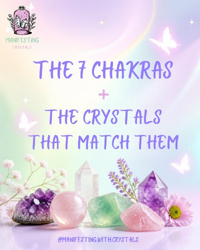
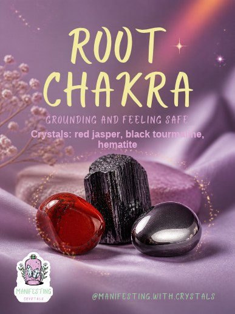
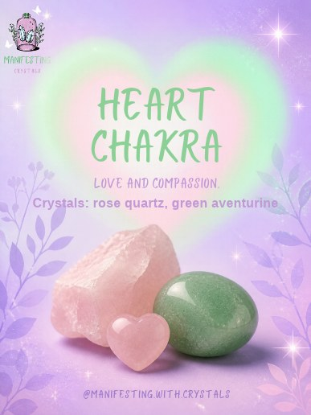
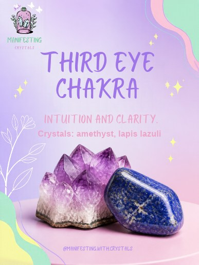
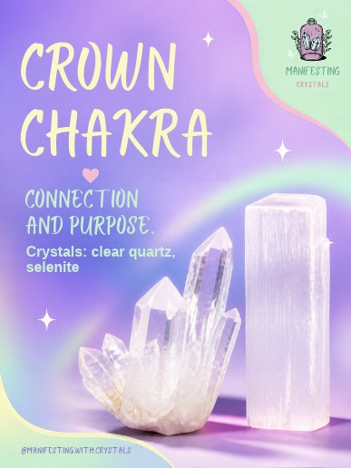
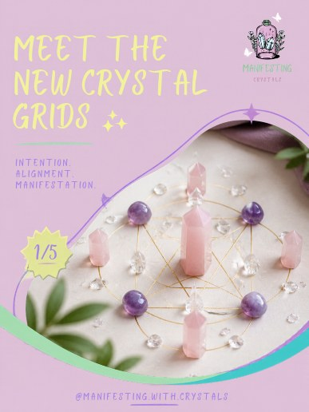
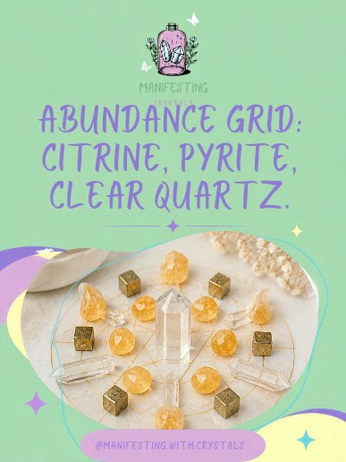
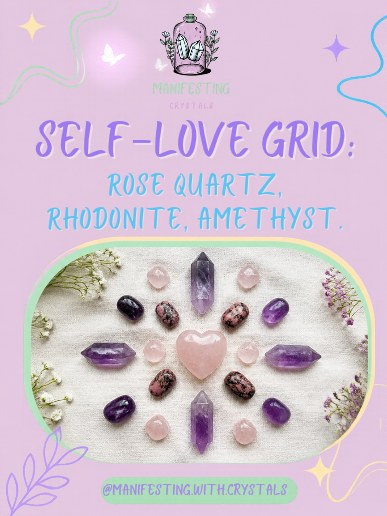

Learn
Start here if you're new to crystals. Save this page for your next reset.
What is manifesting?
Manifesting is getting clear on what you want, believing you can have it, and taking steps toward it. Crystals don't do the work for you. They're a beautiful, physical reminder of the intention you set.
Write your goal down. Give it a date. See it like it already happened. Then sit with your crystals and let it feel real.

The 7 chakras and their crystals
Root Chakra
Grounding and feeling safe.
Crystals: Red jasper, black tourmaline, hematite
Sacral Chakra
Creativity and pleasure.
Crystals: Carnelian, orange calcite
Solar Plexus Chakra
Confidence and willpower.
Crystals: Citrine, tiger's eye
Heart Chakra
Love and compassion.
Crystals: Rose quartz, green aventurine
Throat Chakra
Speaking your truth.
Crystals: Blue lace agate, sodalite
Third Eye Chakra
Intuition and clarity.
Crystals: Amethyst, lapis lazuli
Crown Chakra
Connection and purpose.
Crystals: Clear quartz, selenite
How to align: lie down, set each stone on its chakra, and breathe for 5 minutes.
How to use a crystal grid
- Cleanse your space and stones. Smoke, sound or moonlight all work.
- Set your intention. Write it on paper and place it under the center of the grid.
- Place the center stone. This is your main crystal, the one that holds the intention.
- Build outward. Lay the surrounding stones on the sacred geometry pattern, from the center out.
- Activate it. Trace the lines between the stones with your finger or a quartz point while you repeat your intention.
- Visit it daily. Sit with your grid for a few minutes, visualize, and take your next step.
From the feed
More on Instagram @manifesting.with.crystals.








Want a grid of your own?
Orders are open by DM for now. Send us a message on Instagram and we'll help you pick the grid that's calling you.
DM us on Instagram